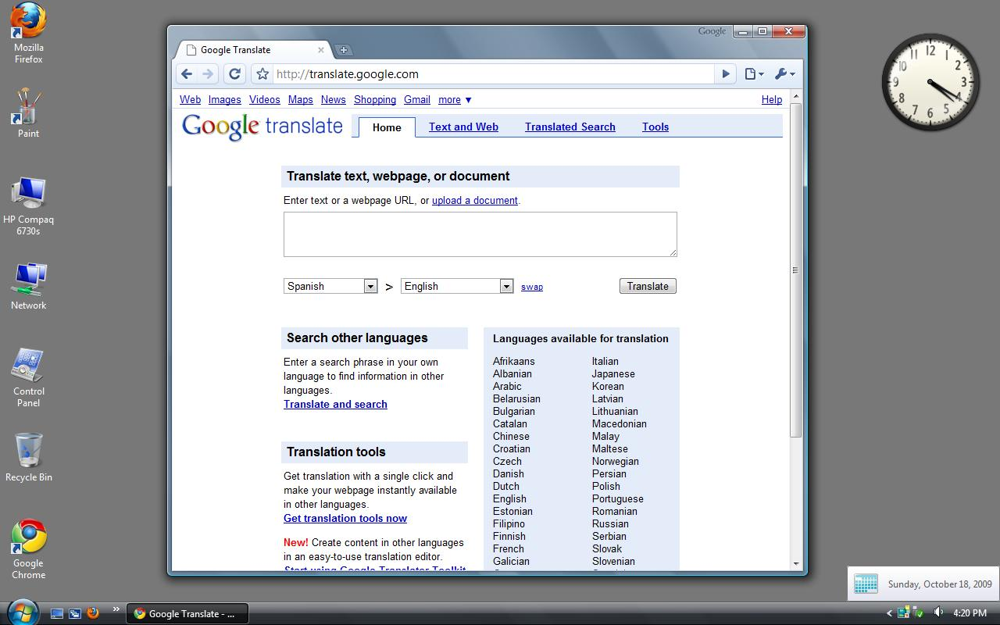
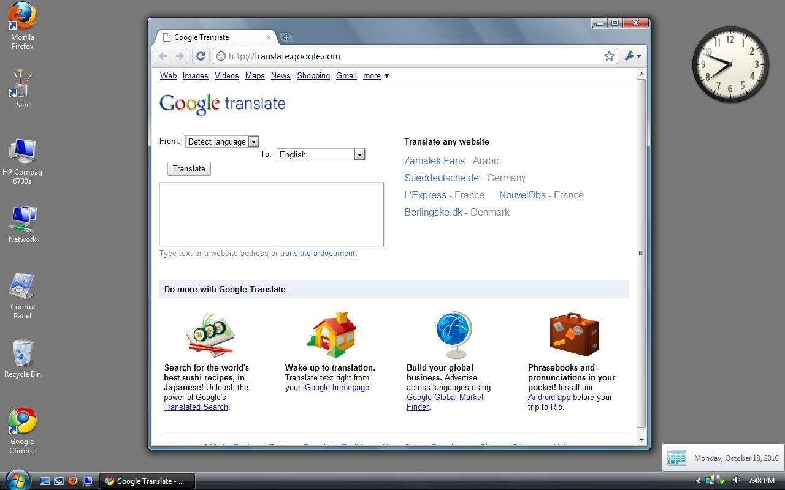
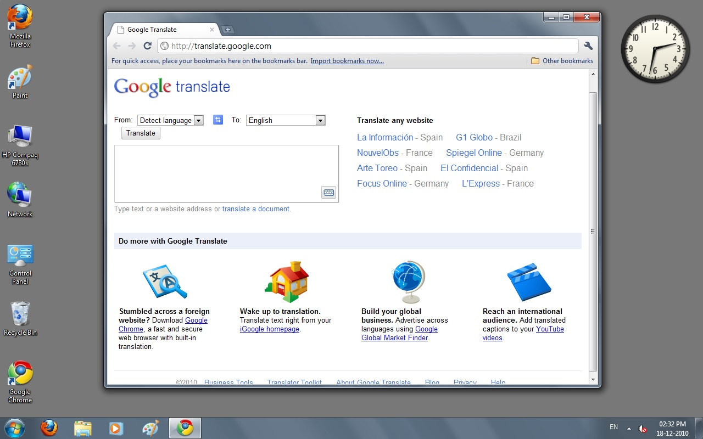
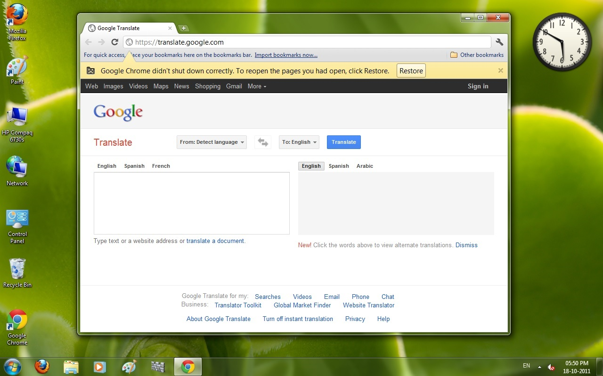

In this post we will talk about how Google Translate evolved in just three years too rapidly.
- If we see the first image from 18 Oct 2009 (16 years old), the layout looks too classic and old with almost no CSS, very old-looking UI, only one boxed translation, and a lot of content. The Chrome browser is also very old-looking.
- If we come to the second image from 18 Oct 2010 (15 years old), the layout is still too classic but it has reduced a few things. The UI is still too minimal and looks still very old. If we come to the browser, the main colour has changed from little bluish to a little yellowish, some icons have been updated and the Google logo in front of the context buttons of the title bar has been removed. The rest of the browser looks exactly the same. I think these changes would not have been spotted by any normal user.
- If we come to the third image from 18 Dec 2010, it looks a little updated. The logo for the first time has changed. This change took place on 15 Nov 2010, when Google Apps changed its logo to the new one. The browser looks changed a lot, the UI has become smooth and modern, the browser has significantly changed. This change in the browser is due to the Chrome 7.0 update of 19 Oct 2010, which brought this new UI.
- At last, we have a screenshot from 18 Oct 2011 (14 years old). The UI of the website has been updated, it now looks modern due to the new CSS in all Google sites which came in June 2011. Translate has two separate boxes — one for input and the second for the output. The browser's icon has changed too. The website still feels old in front of the present-day app.
- THIS IS THE POWER OF TIME AND CHANGE!!

Google Translate on 18 October 2009

Google Translate on 18 October 2010

Google Translate on 18 December 2010

Google Translate on 18 October 2011
© 2025 Niral Bhatt. All rights reserved.